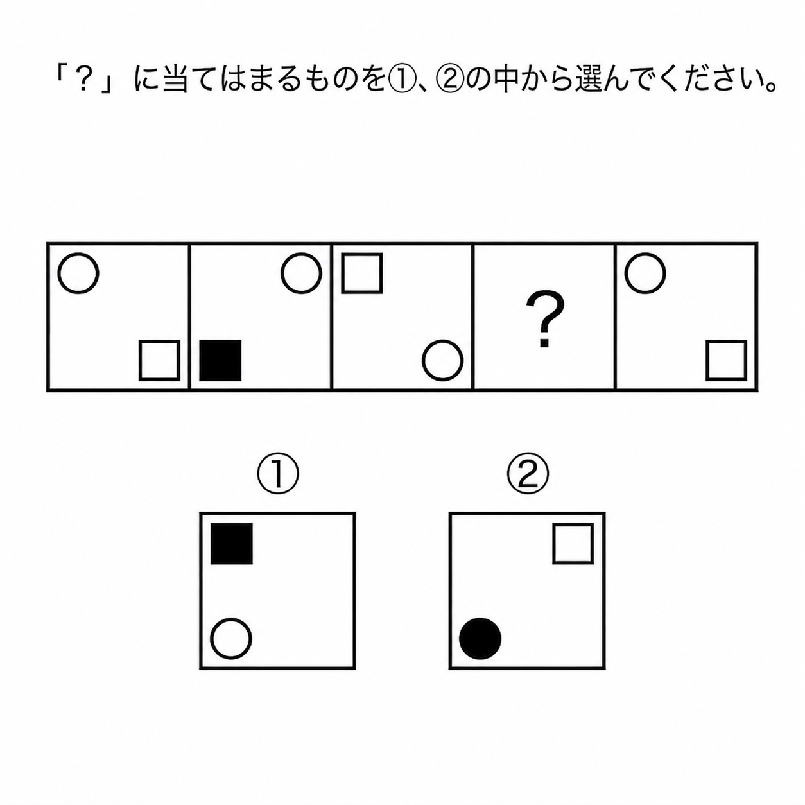

これから、画面に表示される図形の並びを見て、
複数の選択肢の中から最も適切だと思うものを選ぶ課題に取り組んでいただきます。
問題の図形には一定の法則が存在しています。直感だけで判断するのではなく、
「なぜその図形が当てはまるのか」という理由を慎重に考えたうえで、
いずれか1つの選択肢をご決定ください。
なお、本課題は就職活動の適性検査に近い形式となっておりますので、
ぜひ、実際の採用試験に臨むような気持ちで回答してみてください。
以上の内容をご一読いただき、ご了承いただけましたら
下記のボタンより操作練習へお進みください。
本番の課題に入る前に、まずは回答操作の練習を行います。
お手元のマウスを動かして下の選択肢の中から1つ選び、
一番下にある「練習を完了する」ボタンを押してください。
※これは練習ですので、どの選択肢を選んでも結果には影響しません。
準備ができましたら、下の「開始」ボタンを押してください。

そのままお待ちください。
あなたが選んだ選択肢 は不正解でした。
正解は です。
結果を確認したら、次へ進んでください。
以上で課題は終了となります。ご協力ありがとうございました。
画面はこのままの状態で閉じずに、
実験実施者に「終わりました」とお声がけください。
続けてご回答いただく質問紙をお渡しいたします。